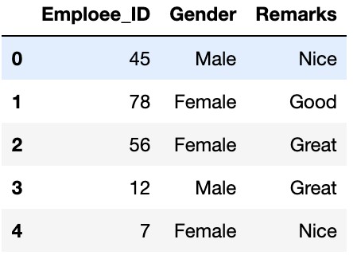

data cleaning¶
links¶
one hot encoding OHE¶
transform categorical data into numbers
# check labels in categorical params
print(data['Gender'].unique())
print(data['Remarks'].unique())
# array(['Male', 'Female'], dtype=object)
# array(['Nice', 'Good', 'Great'], dtype=object)
# Checking for the label counts in the categorical parameters
data['Gender'].value_counts()
data['Remarks'].value_counts()
"""
Female 7
Male 5
Name: Gender, dtype: int64
Nice 5
Great 4
Good 3
Name: Remarks, dtype: int64
"""
# One-Hot encoding the categorical parameters using get_dummies()
one_hot_encoded_data = pd.get_dummies(data, columns = ['Remarks', 'Gender'])
print(one_hot_encoded_data)

You can just use n-1 columns to define parameters if it has n unique labels. For example if we only keep Gender_Female column and drop Gender_Male column, then also we can convey the entire information as when label is 1, it means female and when label is 0 it means male. This way we can encode the categorical data and reduce the number of parameters as well.
missing data¶